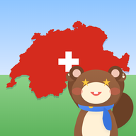

Conditions d'utilisation de HelvetiQuest
En bref. HelvetiQuest est un jeu éducatif sur la géographie de la Suisse. Il est gratuit ; la version complète est un achat unique et facultatif. En ligne, sois respectueux : choisis un pseudo correct et ne mets pas ton vrai nom. Pour toute question : support@plugin.ch.
1. Éditeur
HelvetiQuest est édité par Plugin.ch Sàrl, Suisse. Contact : support@plugin.ch.
2. Utilisation du jeu
Le jeu peut être utilisé gratuitement à des fins personnelles, familiales et scolaires. Il est conçu pour les enfants dès 8 ans ; les plus jeunes jouent sous la responsabilité de leurs parents ou de leur enseignant. Il est interdit de copier, modifier, revendre ou détourner l'application, ou de tenter de perturber son fonctionnement ou ses serveurs.
3. Jeu en ligne et pseudo
- Le jeu en ligne (duels, classement, mode classe) est facultatif et utilise un compte anonyme, sans nom ni e-mail.
- Ton pseudo est visible par les autres joueurs : il doit être correct (pas d'insulte, pas de contenu choquant, pas d'usurpation) et ne doit pas contenir ton vrai nom.
- Chaque joueur peut signaler un pseudo ou bloquer un joueur. Nous examinons les signalements et pouvons retirer un pseudo ou fermer un compte qui ne respecte pas ces règles, sans préavis.
- Tu peux supprimer ton compte en ligne à tout moment : Profil → Paramètres → Supprimer mon compte en ligne.
4. Version complète (achat intégré)
La version complète est un achat unique, sans abonnement, payé dans l'App Store ou Google Play. Elle débloque les niveaux Intermédiaire, Avancé et Brutal, les packs thématiques et les indices sans publicité. Le paiement, la facturation et les remboursements sont gérés par Apple ou Google selon leurs propres conditions. Le bouton « Restaurer mes achats » récupère l'achat sur un nouvel appareil utilisant le même compte Apple ou Google.
5. Licences pour les écoles
Les licences de classe sont vendues sur facture par Plugin.ch Sàrl, pour une année scolaire. Les conditions précises (prix, nombre d'élèves, durée) figurent sur l'offre ou la facture.
6. Publicité
Dans la version gratuite, une vidéo publicitaire peut être regardée, uniquement si le joueur la demande, pour obtenir un indice. Les annonces respectent les règles prévues pour les enfants et ne sont pas personnalisées.
7. Contenus
Les textes, illustrations, la mascotte Mauricette et le logiciel appartiennent à Plugin.ch Sàrl. Les cartes utilisent des données ouvertes de swisstopo et de l'OFEV ; les drapeaux cantonaux sont des symboles officiels ; les photos des packs proviennent de Wikimedia Commons et de Flickr sous licences libres, avec leurs auteurs cités dans l'application (Profil → Informations).
8. Exactitude et disponibilité
Nous faisons notre possible pour que les informations soient exactes et que le jeu fonctionne, mais nous ne pouvons pas garantir l'absence d'erreur ni un service sans interruption. Le jeu en ligne peut être modifié ou interrompu. Dans les limites permises par la loi, Plugin.ch Sàrl n'est pas responsable des dommages indirects liés à l'utilisation de l'application.
9. Données personnelles
Voir la politique de confidentialité.
10. Droit applicable
Ces conditions sont soumises au droit suisse. Les règles impératives de protection des consommateurs de ton pays de résidence restent applicables.
11. Modifications
Nous pouvons adapter ces conditions si l'application évolue. La date en haut de la page indique la dernière version.